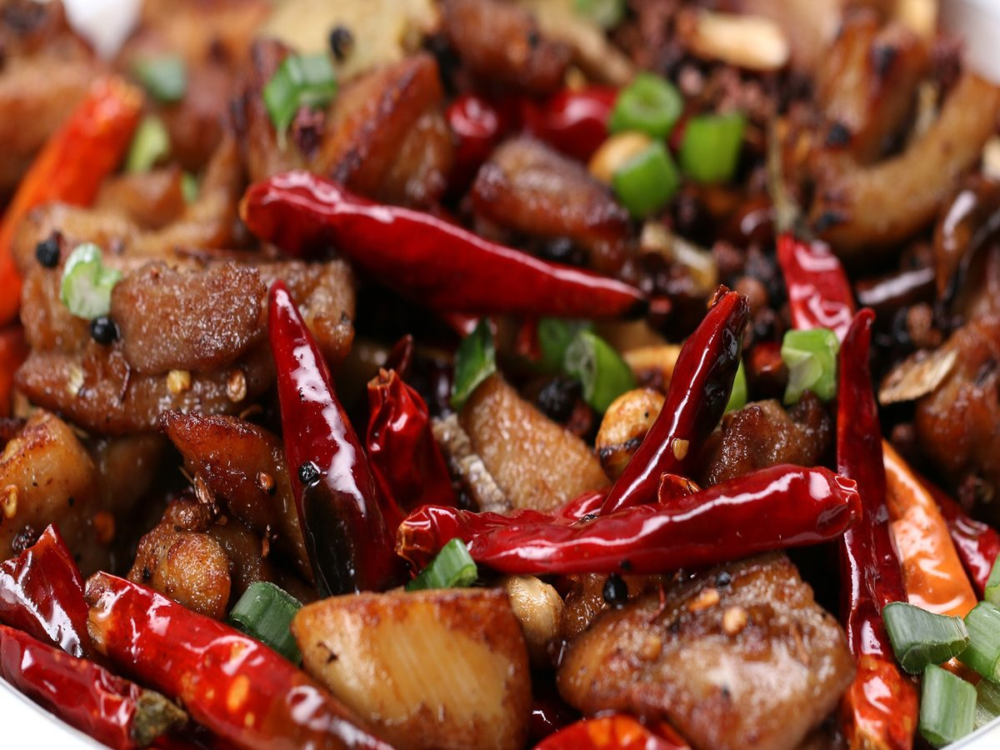
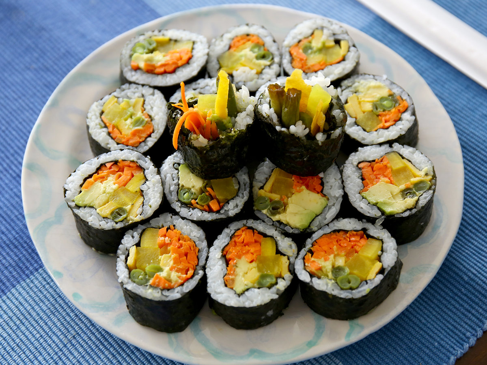
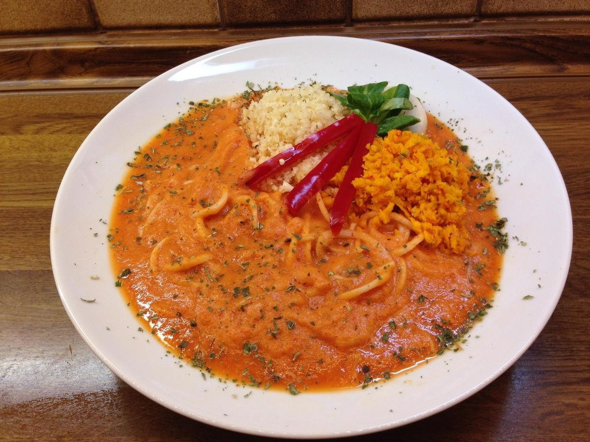
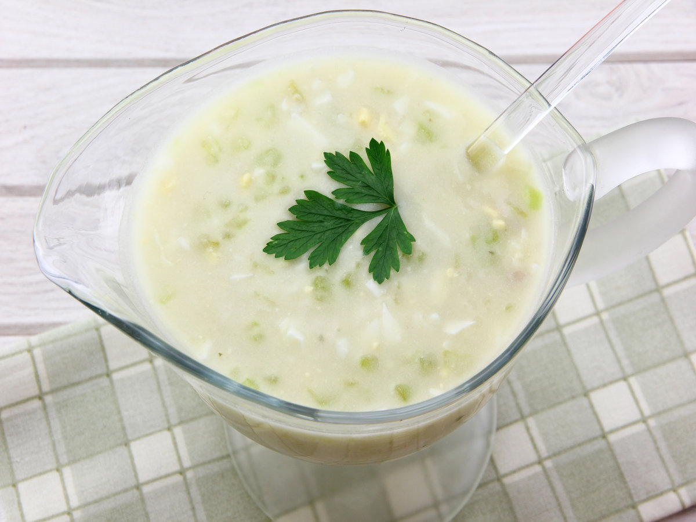
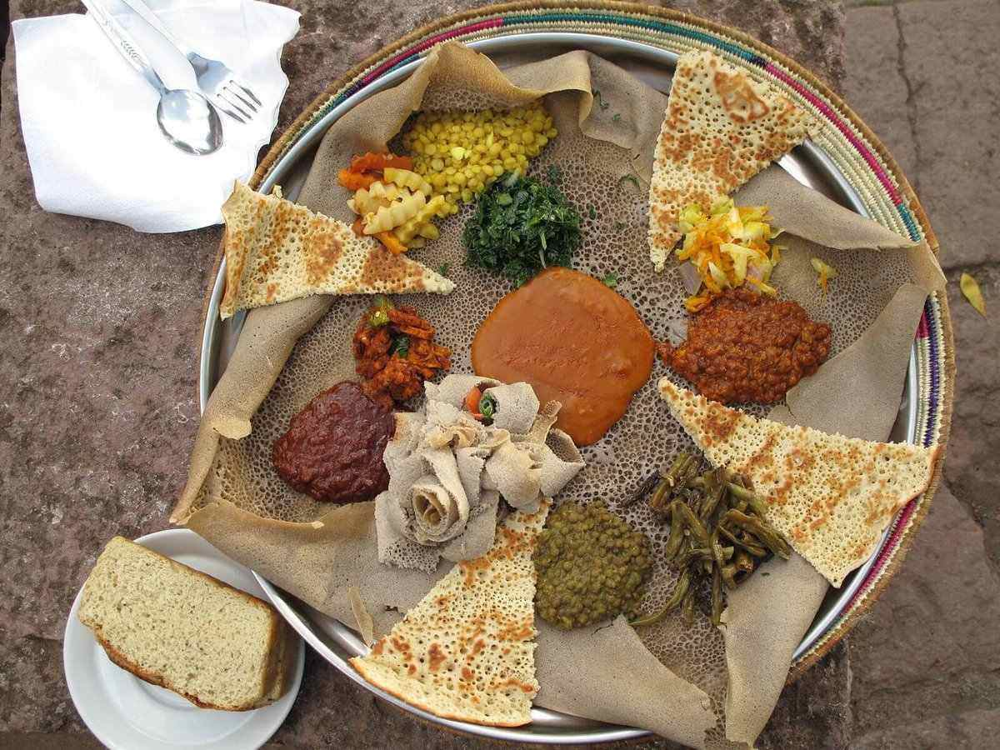

A crab cake is a variety of fishcake that is popular in the United States. Crab cakes are traditionally associated with the area surrounding the Chesapeake Bay, in particular the states of Maryland and Virginia.

Sichuan Chicken Wings
Szechuan Chicken Wings combine great sweet and spicy flavors that can be adjusted to taste. This Chinese plate is definitely a crowd pleaser.

Gimbap
Gimbap is a seaweed rice roll made of gim (a sheet of dried seaweed) and bap (rice). It is a popular take-out food in Korea and abroad, and is known as a convenient food because of its portability.

Pumpkin Rice Noodles
Delicious rice noodles stir-fried with ground pork and pumpkin. These amazing Taiwanese noodles are very easy to make at home.

Egg Sauce
Egg sauce, originally from Nigeria, is a very simple sauce made with eggs and tomatoes. This is one the easiest egg dips that you can prepare within 20 minutes.

Injera
Injera is a sourdough-risen flatbread with a slightly spongy texture. It is central to the dining process in those cultures as bread is the most fundamental component of any meal.